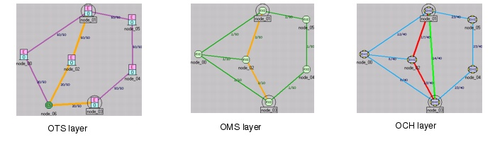
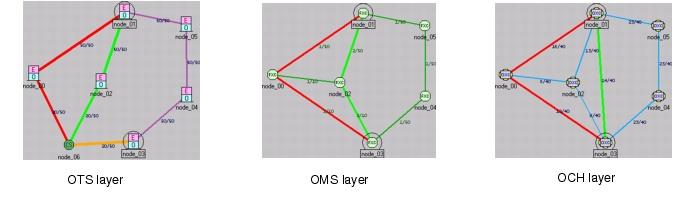
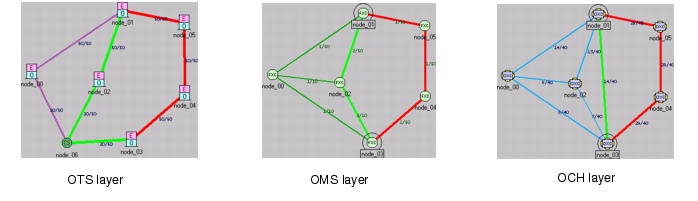

Routing > Route DCL/OCH Traffic Dialog Box > Routing Protection
Routing Protection
When the Protected option is selected, SP Guru Transport Planner tries to set up a connection with a working path and a disjoint protection path. If SP Guru Transport Planner cannot set up both paths, the set-up attempt fails; SP Guru Transport Planner never sets up a protected connection with just one path.
When the Unprotected option is selected, SP Guru Transport Planner tries to set up a connection using just one path.
Protection Options
You can specify the following options when Protection is selected:
- Node Disjoint—With this option selected, SP Guru Transport Planner ensures that a connection's working and protection paths are node disjoint; otherwise only link disjointness is guaranteed. Node disjoint means that the two paths have no intermediate nodes in common.
- Link Disjoint—Specifies the layer down to which link disjointness of the working and protection path of a connection should be guaranteed. Link disjointness on the selected layer means that the two paths have no common links on the selected layer. For more information, see Link Disjointness for Working and Protection Paths.
- Client Protection—With this option selected, 1 + 1 protection occurs at the client; the client protects the connection and hands off two interfaces that must be disjointly routed through the network.
If this option is not selected, the network (not the client) handles the protection and the client hands off just one interface.
Note—The Client Protection option does not affect the working and protection paths and the link resources that are used. It affects only the number of ports used on the equipment at the end point of the connection. This option affects the number of DXC or IXC ports (for DCL traffic), DXC or IXC trib ports (for OCH traffic) and DXC trunk ports (for non-native OCH traffic). SP Guru Transport Planner also uses the protection transponder for non-client protected OCH traffic.
Link Disjointness for Working and Protection Paths
If a working and protection path are link disjoint, their paths have no links in common. You can specify the lowest network layer at which the paths are guaranteed to be link disjoint.
- DCL disjointness disregards underlying optical channels, fiber routes, and cable splitters. Working and protection paths are link disjoint at the DCL layer but are not guaranteed to be link disjoint at lower layers.
- OCH disjointness disregards underlying fiber routes and cable splitters. Paths are link disjoint at the OCH layer but are not guaranteed to be link disjoint at lower layers.
- OMS disjointness considers fiber routes but disregards cable splitters. Paths are link disjoint at the OMS layer but are not guaranteed to be link disjoint at the OTS layer.
- OTS disjointness considers cable splitters and fiber routes so that working and protection paths are disjoint down to the physical layer.
Lower layers of link disjointness increase the ability of the network to route connections in the event of link or node failures. For example, suppose you have a network in which the paths are DCL link disjoint. A DCL connection uses an OCH link that fails. If both working and protection paths use this link, the network cannot set up the DCL connection. However, if the connection is OTS link disjoint, only one path would fail. This means that the connection could still be set up using its working or protection path. Keep in mind that because lower layers of link disjointness ensure higher protection, this might result in higher network costs.
Note—If a network has no cable splitters or fiber routes, OTS, OMS and OCH topologies are identical. Therefore, OTS, OMS, and OCH link disjointness have the same effect on the resulting design.
In the most general case, if a network contains cable splitters and fiber routes, it can have different topologies at lower layers (OCH, OMS and OTS). For more information about cable splitters and fiber routes, see Configuring Cable Splitters and Fiber Routes.
To illustrate the difference between link disjointness at the OCH,OMS and OTS layer, consider the following example. The topology contains a cable splitter in node_06 that has been configured to create OMS links that connect its adjoining nodes. In addition, a fiber route has been introduced at the OCH layer between node_01 and node_03. This fiber is routed via the links node_01<—>node_02 and node_02<—>node_03 (the latter link is also routed using the cable splitter)."
Protected routing with OCH link disjointness results in a working path over the fiber route between node_01 and node_03 and a protecting path via node_02. These routes are disjoint at the OCH layer only, as shown in Figure 6-2 (the orange path reflects the overlap of working and protection paths).
Figure 6-2 Protected Routing with OCH Link Disjointness: Example

Protected routing with OMS link disjointness results in a working path over the fiber route between node_01 and node_03 and a protecting path through node_00. These routes are disjoint at the OCH and OMS layers as shown in Figure 6-3. However at the OTS layer, working and protection path share the link between node_06 and node_03, because the link is used to establish the OMS links through the cable splitter.
Figure 6-3 Protected Routing with OMS Link Disjointness: Example

Protected routing with OTS link disjointness results in a working path over the fiber route between node_01 and node_03 and a protecting path via node_04 and node_05. These routes are disjoint at the OCH, OMS, and OTS layer as shown Figure 6-4.
Figure 6-4 Protected Routing with OTS Link Disjointness: Example

| Home © 1987-2007 OPNET Technologies, Inc. All Rights Reserved. This software may be covered by one or more U.S. Patents. See complete patent notice in the Legal Notices section. OPNET Support Center |